صفحه ۲۸۰
ایجاد پروژه آبوهوا
در Vscode از منو File گزینه Open Folder را کلیک کنید. سپس یکپوشه جدید با نام meteo در مسیر دلخواه ایجاد کرده و پوشه meteo ساخته شده را باز کنید (شکل 5):
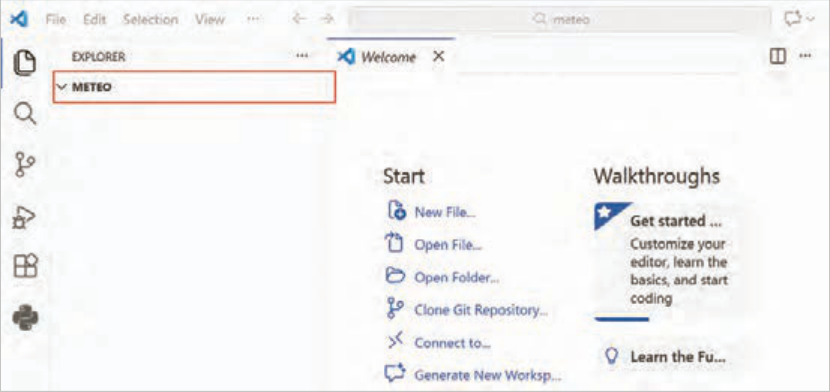
شکل 5 باز کردن پوشه meteo
دوباره ترمینال را باز و دستور زیر را اجرا کنید (شکل 6):
.django-admin startproject config
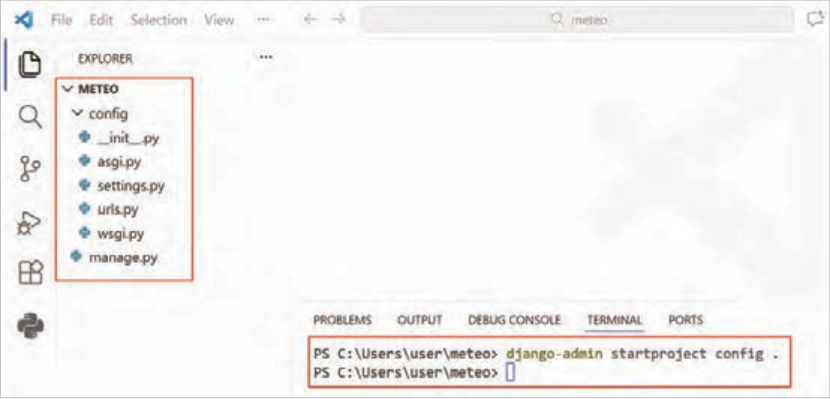
شکل 6 ایجاد پروژه
صفحه ۲۸۱
دستور قبل، پوشه پروژه را با نام Config در مسیر جاری ایجاد میکند که حاوی فایل تنظیمات settings.py و فایلهای اصلی پروژه است. حرف نقطه در انتهای دستور فوق به معنی مسیر جاری است.
آشنایی با برخی فایلهای اصلی پروژه فایلsettings.py: تنظیمات اصلی پروژه در این فایل قرار میگیرند.
فایلurls.py: هرگاه کاربر وارد یک آدرس (URL) شود، این فایل تعیین میکند که سایت کدام صفحه یا بخش را نمایش دهد.
کنجکاوی
در مورد کاربرد فایلهای دیگر موجود در پروژه تحقیق کنید.
اجرای پروژه جنگو دستور زیر را در ترمینال اجرا نمایید.
python manage.py runserver
دستور runserver یک وب سرور (web server) مجازی کوچک برای پروژه جنگو راهاندازی میکند، این وب سرور فقط مخصوص برنامهنویس جنگو است تا بتواند پروژه جنگو را در رایانه خودش اجرا کند (شکل 7).
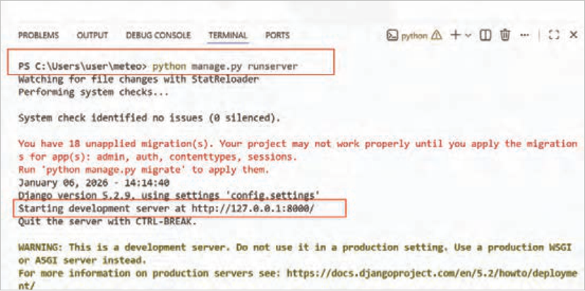
شکل 7 راهاندازی موفق وب سرور جنگو
صفحه ۲۸۲
بعد از اجرای دستور، یک فایل با نام db.sqlite3 کنار فایل manage.py ساخته میشود. این فایل، پایگاهداده پیشفرض جنگو است. جنگو از این فایل برای مدیریت پایگاهداده و جداول استفاده میکند.
همانطوری که در شکل 7 مشخص شده است، میتوانید سایت خود را در آدرس http://127.0.0.1:8000 مشاهده کنید.
با تایپ آدرس فوق درون نوار آدرس مرورگر، صفحه اصلی سایت را مشابه شکل 8 مشاهده میکنید. ممکن است بهدلیل نسخههای متفاوت جنگو تصویر متفاوتی مشاهده کنید.
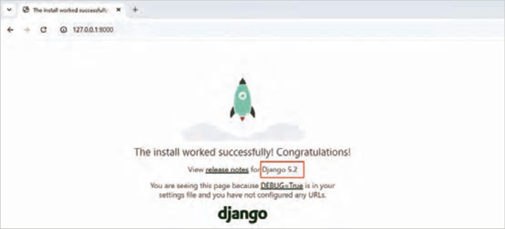
شکل 8 اجرای موفقیتآمیز سایت
آدرس ip که جنگو روی آن اجرا میشود، 127.0.0.1 است. این آدرس به آدرس local معروف است. این ip به رایانه جاری اشاره میکند، یعنی همین رایانهای که سرور جنگو را روی آن اجرا کردهاید. اگر رایانه شما در یک شبکه قرار داشته باشد، رایانههای دیگر نمیتوانند با این آدرس، به رایانه شما متصل شوند.
کنجکاوی
بررسی کنید، برای پروژههایی که در بستر اینترنت در حال استفاده هستند، از چه وبسرورها و چه پایگاه دادههایی استفاده میشود؟
ساخت اولین app در جنگو یک پروژه جنگو میتواند شامل یک یا چندین app (اپلیکیشن) باشد. پروژهای که با دستور startproject ایجاد کردید، هنوز app ندارد. در جنگو میتوانید برای وظایف مستقل یک app ایجاد کنید.
فرض کنید پروژه شما یک کارخانه در دنیای واقعی است، واحدهای تولید کارخانه هرکدام میتوانند مانند یک app باشند. بهعنوانمثال، واحدی که وظیفه رنگکردن خودرو را برعهده دارد، مستقل از واحدهای دیگر میتواند عمل کند. کافی است یک خودرو به این واحد تحویل شود و رنگ درخواستی مشخص شود. این واحد کار خود را انجام داده و خودرو را رنگ شده تحویل میدهد.
هر app وظیفه خاصی انجام میدهد و باید بهصورتی ایجاد گردد که قابلیت استفاده مجدد داشته باشد، یعنی یک app را بتوان در پروژه دیگری استفاده کرد و همان وظیفه را بهخوبی انجام دهد.
صفحه ۲۸۳
برای ساخت app از دستور startapp استفاده میشود، ابتدا سرور جنگو را متوقف کرده (با ctrl + c) و سپس دستور زیر را اجرا کنید.
python manage.py startapp weather
یکپوشه با نام weather ساخته میشود. پوشه weather در حقیقت یک app جنگویی است که وظیفه نمایش وضعیت آبوهوای شهر موردنظر را برعهده دارد.
پس از ساخت weather app ساختار پروژه همانند شکل 9 خواهد بود.
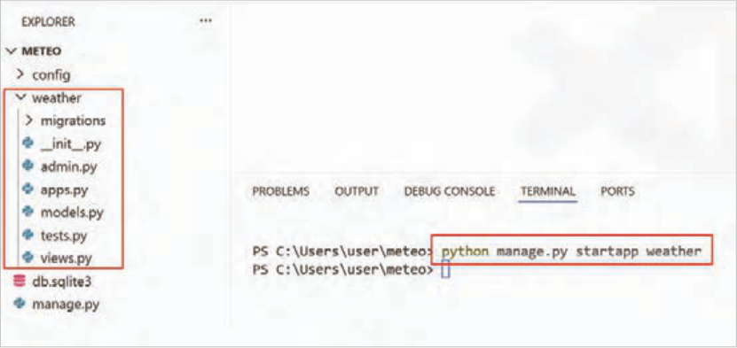
شکل 9 محتوای weather app
معرفی app ایجاد شده به جنگو در settings.py در این مرحله، لازم است app ساخته شده به جنگو معرفی شود. برای این کار فایل settings.py را باز کنید و weather را مطابق شکل 10 به انتهای لیست INSTALLED_APPS اضافه کنید.
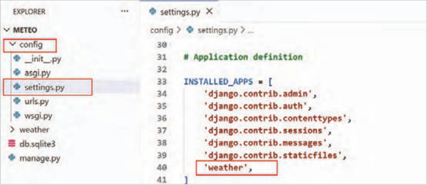
شکل 10 اضافهکردن weather به installed_apps
صفحه ۲۸۴
ساخت اولین view هر view که در فایل views.py است، برحسب وظیفهاش، با کاربر تعامل میکند، پس برای نمایش دمای یک شهر، یک view باید ساخته شود.
فایلهای View در جنگو مسئول پاسخگویی به درخواست کاربران هستند، یعنی Request کاربر را بعد از مسیریابی میگیرند و به آن درخواست یک پاسخ درست میدهند.
مرحله اول: فایل views.py را باز کنید. یک تابع با نام show_temp_view همانند شکل 11 اضافه کنید:
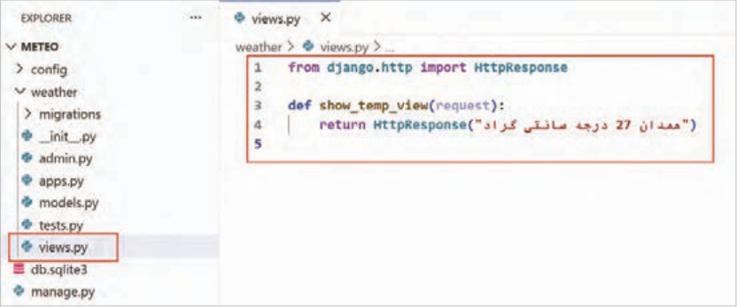
شکل 11 ایجاد view با نام show_temp_view
توضیحات کدها:
خط 1: کلاس HttpResponse از ماژول http وارد (import) شده است.
خط 3: یک تابع با نام show_temp_view ایجاد شده است. هر view در جنگو، تابعی است که باید پارامتر request را داشته باشد.
خط 4: یک object از نوع HttpResponse ایجاد شده است. HttpResponse محتوای نهاییِ ارسالشده به مرورگر را در خود نگهداری میکند و مشخص میکند کاربر چه چیزی از سرور دریافت کند.
تابع show_temp_view در فایل views.py فقط یک متن ساده، نمایش خواهد داد.
فایل را ذخیره نمایید و سرور جنگو را با python manage.py runserver راهاندازی کنید.
آدرس صفحه اصلی را وارد کنید، باز هم صفحه خوشامدگویی را میبینید. پس لازم است تغییراتی اعمال کنید تا در صفحه اصلی سایت، بهجای خوشامدگویی متن «همدان 27 درجه سانتیگراد» نمایش داده شود.
فایل urls.py در پوشه config را باز کنید (شکل 12).
صفحه ۲۸۵
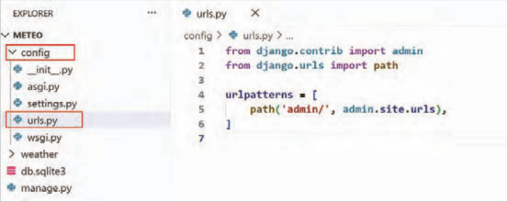
شکل 12 فایل urls.py
بعد از ایجاد پروژه، فایل urls.py نیز کنار settings.py ایجاد میشود. هرگاه کاربر وارد یک آدرس (URL) شود، این فایل تعیین میکند که سایت کدام صفحه یا بخش را نمایش دهد.
توضیحات کدها:
خط 4: جنگو از یک لیست با نام urlpatterns برای مدیریت آدرس صفحات سایت استفاده میکند.
خط 5: هر عضو از urlpattrns یک path است که معادل آدرس یک صفحه در سایت است. بهصورت پیشفرض یک path برای صفحه پنل ادمین جنگو با مقدار /admin وجود دارد که معادل آدرس http://127.0.0.1:8000/admin در مرورگر است.
آدرس http://127.0.0.1:8000/admin را در مرورگر باز کنید. صفحه ورود به پنل ادمین همانند شکل 13 از شما نام کاربری و رمز عبور را درخواست میکند. در ادامه روش ساخت نام کاربری و رمز عبور را خواهید آموخت.
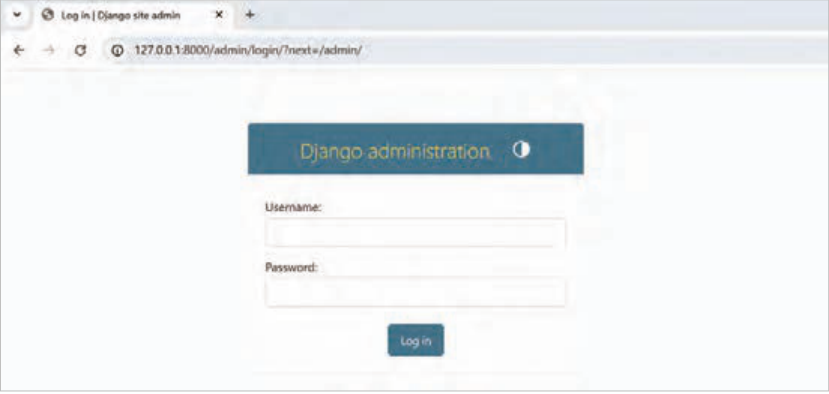
شکل 13 صفحه ورود به پنل ادمین
صفحه ۲۸۶
مرحله دوم: دوباره وارد فایل urls.py شده و تغییراتی همانند شکل 14 در فایل اعمال کنید.
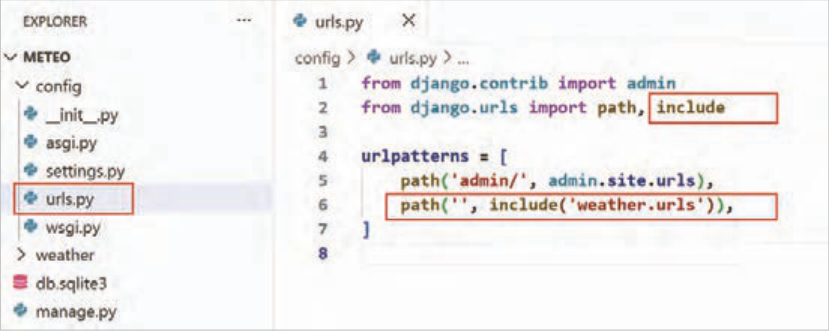
شکل 14 اضافهکردن path جدید
توضیحات کدها:
خط 2: ماژول include وارد (import) شده است.
خط 6: یک path جدید اضافه شده است. اولین آرگومان تابع path در این دستور فقط یکرشته خالی است و به این معناست که اگر در آدرس (URL) رسیده به سرور جنگو، جلوی آدرس سایت هیچ عبارتی درج نشده بود، با استفاده از ماژول include به سراغ فایل urls.py در weather app بروید و کار را از آنجا ادامه دهید. در واقع این خط، درخواستهای صفحۀ اصلی را به weather app ارسال میکند.
مرحله سوم: وارد پوشه weather شده و برای weather app یک urls.py همانند شکل 15 ایجاد کنید.
هر app میتواند یک urls.py اختصاصی داشته باشد.
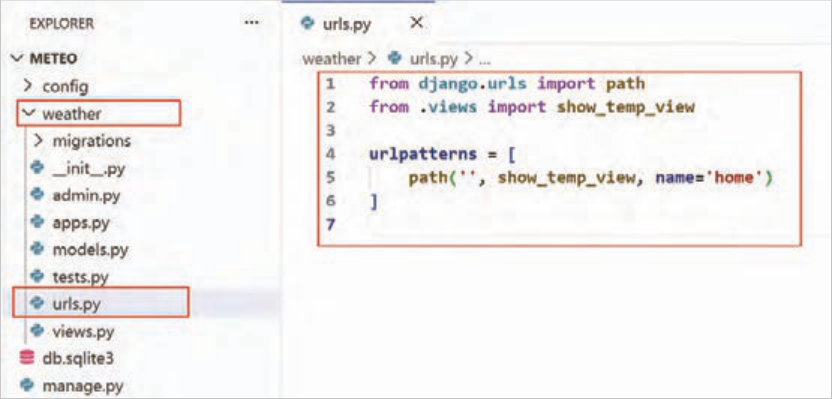
شکل 15 ایجاد فایل urls.py برای app